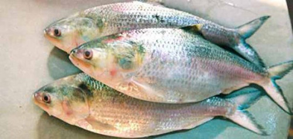

The ilish (Tenualosa ilisha) (Bengali: ইলিশ), also known as the ilisha, hilsa,in the family Clupeidae. It is a very popular and sought-after food fish in the Indian Subcontinent. It is the national fish of Bangladesh and state symbol in the Indian states of West Bengal and Tripura.The fish contributes about 12% of the total fish production and about 1.15% of GDP in Bangladesh.
Other names include: Jatka, ilish, ellis, palla fish, hilsha, ilih etc. (Tamil: உள்ள மீன்/Ulla Meen, Bengali: ইলিশ: ilish, Assamese: ইলীহ/ইলীহি: ilih/ilihi, Gujarati: મોદાર/પાલ્વા: Modar or Palva, Odia: ଇଲିଶି: ilishi, Sindhī: پلو مڇي pallo machhi, Telugu: పులస pulasa). The name ilish is also used in India's Assamese, Bengali-and Odia community. In Iraq it is Called Sboor (صبور). In Malaysia and Indonesia, it is commonly known as Terubok . Due to its distinguished features as being oily and tender, some Malays, especially in northern Johore, call it 'terubok umno' (to distinguish it from the toli - which species is rich of tiny bones and not so oily).
Other names include: Jatka, ilish, ellis, palla fish, hilsha, ilih etc. (Tamil: உள்ள மீன்/Ulla Meen, Bengali: ইলিশ: ilish, Assamese: ইলীহ/ইলীহি: ilih/ilihi, Gujarati: મોદાર/પાલ્વા: Modar or Palva, Odia: ଇଲିଶି: ilishi, Sindhī: پلو مڇي pallo machhi, Telugu: పులస pulasa). The name ilish is also used in India's Assamese, Bengali-and Odia community. In Iraq it is Called Sboor (صبور). In Malaysia and Indonesia, it is commonly known as Terubok . Due to its distinguished features as being oily and tender, some Malays, especially in northern Johore, call it 'terubok umno' (to distinguish it from the toli - which species is rich of tiny bones and not so oily).
This is an oily fish
The is a inline css example